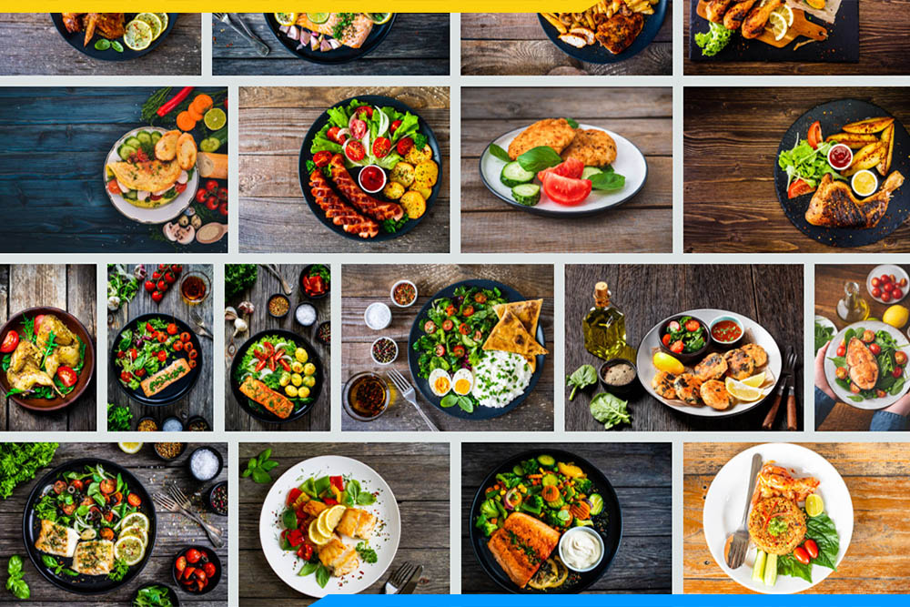
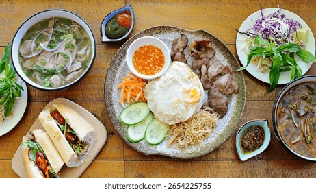
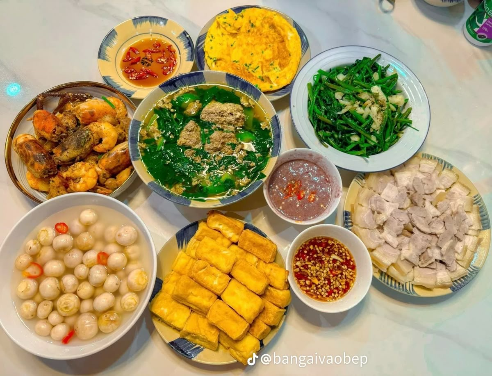
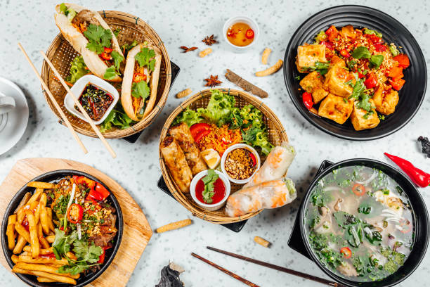
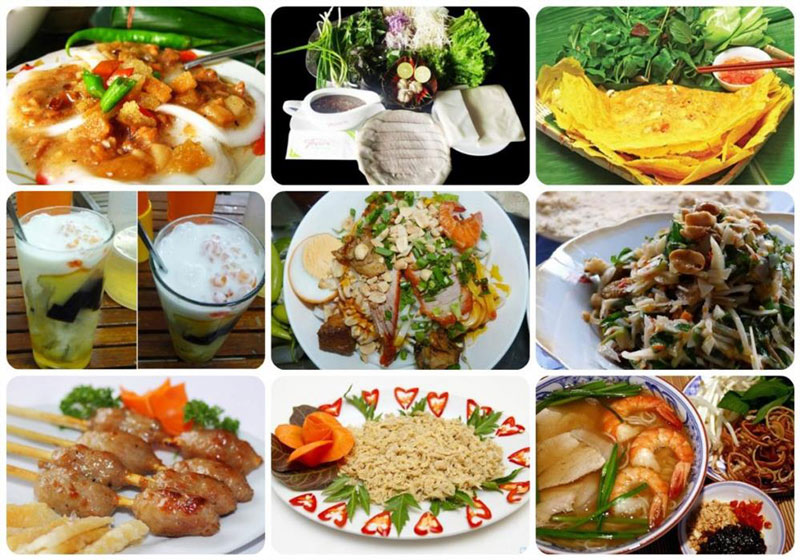
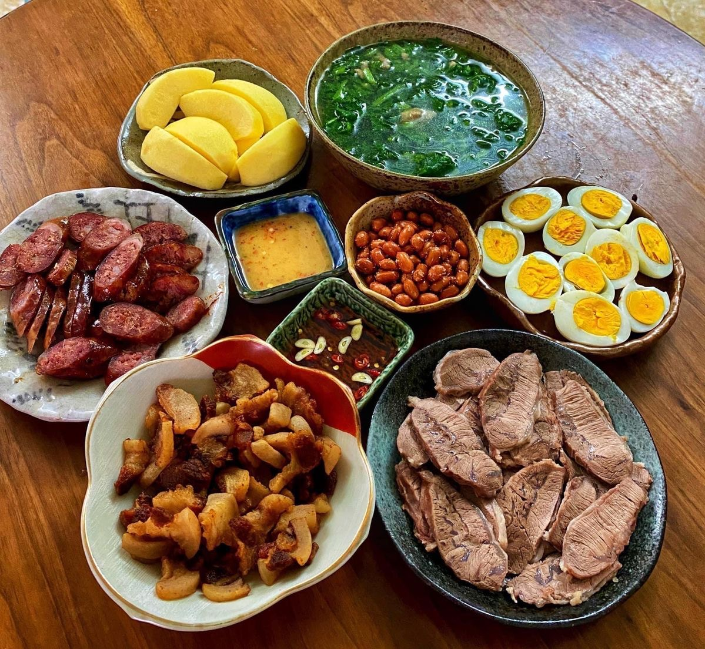

Tại chuyên mục này, bạn sẽ tìm thấy những hướng dẫn chi tiết từ khâu chuẩn bị nguyên liệu đến cách chế biến và trình bày món ăn sao cho hấp dẫn nhất. Mỗi công thức đều được trình bày rõ ràng, dễ hiểu, kèm theo những mẹo nhỏ giúp món ăn thêm đậm đà và đẹp mắt. Không chỉ có các món ăn ngon, chúng tôi còn chia sẻ cách pha chế những loại thức uống thơm ngon, bổ dưỡng, phù hợp cho mọi dịp từ bữa cơm gia đình đến những buổi gặp gỡ bạn bè. Hãy cùng khám phá và tạo nên những hương vị tuyệt vời cho căn bếp của bạn!





